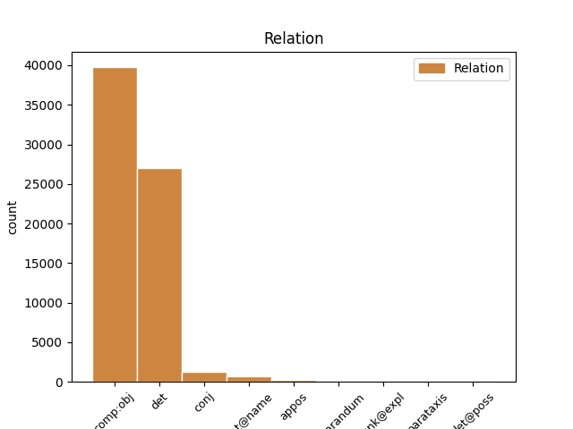
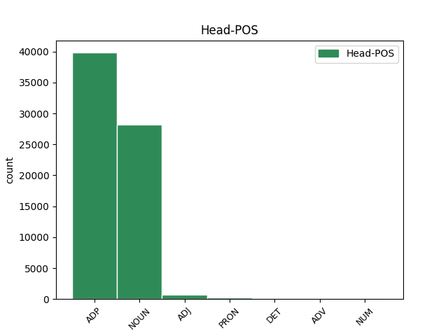
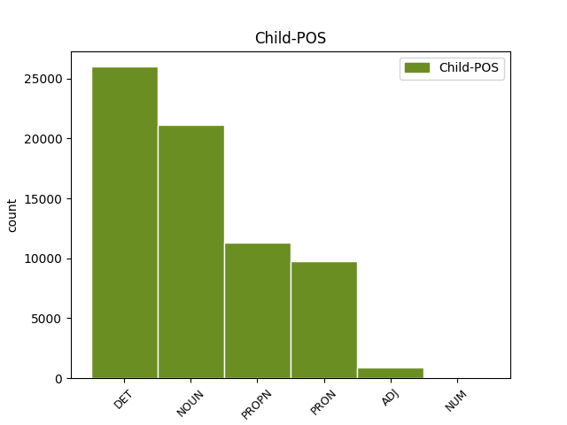

Distribution of features within this leaf



Agreement Rules sorted by frequency.
- When the dependent token is the determiner(det) of the head token, and the head token is NOUN and the dependent token is DET.
1 Vizepräsidentin _ _ _ _ 0 _ _ _
2 Judy _ _ _ _ 0 _ _ _
3 Qua _ _ _ _ 0 _ _ _
4 erklärte _ _ _ _ 0 _ _ _
5 , _ _ _ _ 0 _ _ _
6 der _ _ _ _ 0 _ _ _
7 Gewinn _ _ _ _ 0 _ _ _
8 des des DET ART Case=Gen|Gender=Neut|Number=Sing|PronType=Art 9 det _ _
9 Unternehmens Unternehmen NOUN NN Case=Gen|Gender=Neut|Number=Sing|Person=3 0 _ _ _
10 werde _ _ _ _ 0 _ _ _
11 durch _ _ _ _ 0 _ _ _
12 die _ _ _ _ 0 _ _ _
13 Reduzierung _ _ _ _ 0 _ _ _
14 nicht _ _ _ _ 0 _ _ _
15 negativ _ _ _ _ 0 _ _ _
16 beeinflusst _ _ _ _ 0 _ _ _
17 . _ _ _ _ 0 _ _ _
1 Philips _ _ _ _ 0 _ _ _
2 erklärte _ _ _ _ 0 _ _ _
3 , _ _ _ _ 0 _ _ _
4 dass _ _ _ _ 0 _ _ _
5 die _ _ _ _ 0 _ _ _
6 Hälfte _ _ _ _ 0 _ _ _
7 der _ _ _ _ 0 _ _ _
8 CD-RW-Laufwerke _ _ _ _ 0 _ _ _
9 als _ _ _ _ 0 _ _ _
10 Einbaugeräte _ _ _ _ 0 _ _ _
11 in in ADP APPR AdpType=Prep|Case=Dat 0 _ _ _
12 Computern Computer NOUN NN Case=Dat|Gender=Masc|Number=Plur|Person=3 11 comp:obj _ _
13 verkauft _ _ _ _ 0 _ _ _
14 würden _ _ _ _ 0 _ _ _
15 . _ _ _ _ 0 _ _ _
1 Den _ _ _ _ 0 _ _ _
2 Einsatzzweck _ _ _ _ 0 _ _ _
3 von von ADP APPR AdpType=Prep|Case=Dat 0 _ _ _
4 Powerline Powerline PROPN NE Case=Dat|Number=Sing|Person=3 3 comp:obj _ _
5 Communications _ _ _ _ 0 _ _ _
6 sieht _ _ _ _ 0 _ _ _
7 RWE _ _ _ _ 0 _ _ _
8 nicht _ _ _ _ 0 _ _ _
9 nur _ _ _ _ 0 _ _ _
10 im _ _ _ _ 0 _ _ _
11 schnellen _ _ _ _ 0 _ _ _
12 Surfen _ _ _ _ 0 _ _ _
13 im _ _ _ _ 0 _ _ _
14 Internet _ _ _ _ 0 _ _ _
15 , _ _ _ _ 0 _ _ _
16 sondern _ _ _ _ 0 _ _ _
17 auch _ _ _ _ 0 _ _ _
18 in _ _ _ _ 0 _ _ _
19 der _ _ _ _ 0 _ _ _
20 Telefonie _ _ _ _ 0 _ _ _
21 sowie _ _ _ _ 0 _ _ _
22 der _ _ _ _ 0 _ _ _
23 Vernetzung _ _ _ _ 0 _ _ _
24 von _ _ _ _ 0 _ _ _
25 Haushaltsgeräten _ _ _ _ 0 _ _ _
26 . _ _ _ _ 0 _ _ _
1 Hierzulande _ _ _ _ 0 _ _ _
2 hat _ _ _ _ 0 _ _ _
3 man _ _ _ _ 0 _ _ _
4 vor vor ADP APPR AdpType=Prep|Case=Dat 0 _ _ _
5 ihm ihm PRON PPER Case=Dat|Gender=Neut|Number=Sing|Person=3|PronType=Prs 4 comp:obj _ _
6 allerdings _ _ _ _ 0 _ _ _
7 wenig _ _ _ _ 0 _ _ _
8 zu _ _ _ _ 0 _ _ _
9 befürchten _ _ _ _ 0 _ _ _
10 : _ _ _ _ 0 _ _ _
1 GameVoice _ _ _ _ 0 _ _ _
2 , _ _ _ _ 0 _ _ _
3 ein _ _ _ _ 0 _ _ _
4 Teil _ _ _ _ 0 _ _ _
5 der _ _ _ _ 0 _ _ _
6 neu _ _ _ _ 0 _ _ _
7 vorgestellten _ _ _ _ 0 _ _ _
8 Peripherie _ _ _ _ 0 _ _ _
9 , _ _ _ _ 0 _ _ _
10 soll _ _ _ _ 0 _ _ _
11 es _ _ _ _ 0 _ _ _
12 Spielern _ _ _ _ 0 _ _ _
13 ermöglichen _ _ _ _ 0 _ _ _
14 , _ _ _ _ 0 _ _ _
15 mit _ _ _ _ 0 _ _ _
16 ihren sein PRON PPOSAT Case=Dat|Number=Plur|Person=3|Poss=Yes|PronType=Prs 17 det _ _
17 Mitstreitern Streiter NOUN NN Case=Dat|Gender=Masc|Number=Plur|Person=3 0 _ _ _
18 auf _ _ _ _ 0 _ _ _
19 der _ _ _ _ 0 _ _ _
20 ganzen _ _ _ _ 0 _ _ _
21 Welt _ _ _ _ 0 _ _ _
22 per _ _ _ _ 0 _ _ _
23 Sprache _ _ _ _ 0 _ _ _
24 zu _ _ _ _ 0 _ _ _
25 kommunizieren _ _ _ _ 0 _ _ _
26 . _ _ _ _ 0 _ _ _
1 Zu _ _ _ _ 0 _ _ _
2 den _ _ _ _ 0 _ _ _
3 Neuerungen _ _ _ _ 0 _ _ _
4 sollen _ _ _ _ 0 _ _ _
5 die _ _ _ _ 0 _ _ _
6 Unterstützung _ _ _ _ 0 _ _ _
7 des _ _ _ _ 0 _ _ _
8 Bildformates Format NOUN NN Case=Gen|Gender=Neut|Number=Sing|Person=3 0 _ _ _
9 16:9 _ _ _ _ 0 _ _ _
10 und _ _ _ _ 0 _ _ _
11 des _ _ _ _ 0 _ _ _
12 YUV-Komponentensignals Signal NOUN NN Case=Gen|Gender=Neut|Number=Sing|Person=3 8 conj _ _
13 zählen _ _ _ _ 0 _ _ _
14 . _ _ _ _ 0 _ _ _
1 Der _ _ _ _ 0 _ _ _
2 Chip _ _ _ _ 0 _ _ _
3 wird _ _ _ _ 0 _ _ _
4 sich _ _ _ _ 0 _ _ _
5 nach _ _ _ _ 0 _ _ _
6 Aussagen _ _ _ _ 0 _ _ _
7 der _ _ _ _ 0 _ _ _
8 beiden _ _ _ _ 0 _ _ _
9 Partner _ _ _ _ 0 _ _ _
10 in _ _ _ _ 0 _ _ _
11 die _ _ _ _ 0 _ _ _
12 von _ _ _ _ 0 _ _ _
13 der _ _ _ _ 0 _ _ _
14 Firma _ _ _ _ 0 _ _ _
15 C-Cube _ _ _ _ 0 _ _ _
16 - _ _ _ _ 0 _ _ _
17 vor vor ADP APPR AdpType=Prep|Case=Dat 0 _ _ _
18 kurzem kurz ADJ ADJA Case=Dat|Degree=Pos|Number=Sing 17 comp:obj _ _
19 von _ _ _ _ 0 _ _ _
20 LSI _ _ _ _ 0 _ _ _
21 aufgekauft _ _ _ _ 0 _ _ _
22 - _ _ _ _ 0 _ _ _
23 entwickelte _ _ _ _ 0 _ _ _
24 ZiVA-5-Reihe _ _ _ _ 0 _ _ _
25 eingliedern _ _ _ _ 0 _ _ _
26 , _ _ _ _ 0 _ _ _
27 eine _ _ _ _ 0 _ _ _
28 bei _ _ _ _ 0 _ _ _
29 Herstellern _ _ _ _ 0 _ _ _
30 immer _ _ _ _ 0 _ _ _
31 beliebter _ _ _ _ 0 _ _ _
32 werdende _ _ _ _ 0 _ _ _
33 Single-Chip-Lösung _ _ _ _ 0 _ _ _
34 zur _ _ _ _ 0 _ _ _
35 Verarbeitung _ _ _ _ 0 _ _ _
36 von _ _ _ _ 0 _ _ _
37 Audio- _ _ _ _ 0 _ _ _
38 und _ _ _ _ 0 _ _ _
39 Video-Daten _ _ _ _ 0 _ _ _
40 . _ _ _ _ 0 _ _ _
1 Auf _ _ _ _ 0 _ _ _
2 der _ _ _ _ 0 _ _ _
3 Web-Site _ _ _ _ 0 _ _ _
4 des _ _ _ _ 0 _ _ _
5 noch _ _ _ _ 0 _ _ _
6 nicht _ _ _ _ 0 _ _ _
7 benannten _ _ _ _ 0 _ _ _
8 Unternehmens _ _ _ _ 0 _ _ _
9 soll _ _ _ _ 0 _ _ _
10 der _ _ _ _ 0 _ _ _
11 Surfer _ _ _ _ 0 _ _ _
12 Angebote _ _ _ _ 0 _ _ _
13 vergleichen _ _ _ _ 0 _ _ _
14 und _ _ _ _ 0 _ _ _
15 so _ _ _ _ 0 _ _ _
16 den _ _ _ _ 0 _ _ _
17 schnellsten schnell ADJ ADJA Case=Acc|Degree=Sup|Gender=Masc|Number=Sing 0 _ _ _
18 oder _ _ _ _ 0 _ _ _
19 günstigsten günstig ADJ ADJA Case=Acc|Degree=Sup|Gender=Masc|Number=Sing 17 conj _ _
20 Flug _ _ _ _ 0 _ _ _
21 auswählen _ _ _ _ 0 _ _ _
22 können _ _ _ _ 0 _ _ _
23 . _ _ _ _ 0 _ _ _
1 Der _ _ _ _ 0 _ _ _
2 erste _ _ _ _ 0 _ _ _
3 mit _ _ _ _ 0 _ _ _
4 650 _ _ _ _ 0 _ _ _
5 Nanometer _ _ _ _ 0 _ _ _
6 Wellenlänge _ _ _ _ 0 _ _ _
7 tastet _ _ _ _ 0 _ _ _
8 den _ _ _ _ 0 _ _ _
9 0,74 _ _ _ _ 0 _ _ _
10 Micrometer _ _ _ _ 0 _ _ _
11 Spurabstand _ _ _ _ 0 _ _ _
12 der _ _ _ _ 0 _ _ _
13 DVD-Oberfläche _ _ _ _ 0 _ _ _
14 ab _ _ _ _ 0 _ _ _
15 , _ _ _ _ 0 _ _ _
16 der der DET ART Case=Nom|Gender=Masc|Number=Sing|PronType=Art 17 det _ _
17 zweite zweit ADJ ADJA Case=Nom|Degree=Pos|Gender=Masc|Number=Sing 0 _ _ _
18 mit _ _ _ _ 0 _ _ _
19 780 _ _ _ _ 0 _ _ _
20 Nanometer _ _ _ _ 0 _ _ _
21 Wellenlänge _ _ _ _ 0 _ _ _
22 liest _ _ _ _ 0 _ _ _
23 die _ _ _ _ 0 _ _ _
24 CD-Formate _ _ _ _ 0 _ _ _
25 . _ _ _ _ 0 _ _ _
1 Der _ _ _ _ 0 _ _ _
2 koreanische _ _ _ _ 0 _ _ _
3 Elektronikhersteller _ _ _ _ 0 _ _ _
4 Samsung _ _ _ _ 0 _ _ _
5 und _ _ _ _ 0 _ _ _
6 der _ _ _ _ 0 _ _ _
7 Software-Riese Riese NOUN NN Case=Nom|Gender=Masc|Number=Sing|Person=3 0 _ _ _
8 Microsoft Microsoft PROPN NE Case=Nom|Number=Sing|Person=3 7 flat@name _ _
9 entwickeln _ _ _ _ 0 _ _ _
10 gemeinsam _ _ _ _ 0 _ _ _
11 die _ _ _ _ 0 _ _ _
12 nächste _ _ _ _ 0 _ _ _
13 Generation _ _ _ _ 0 _ _ _
14 von _ _ _ _ 0 _ _ _
15 Mobiltelefonen _ _ _ _ 0 _ _ _
16 . _ _ _ _ 0 _ _ _
1 Die Die DET ART Case=Acc|Number=Plur|PronType=Art 3 det _ _
2 größeren _ _ _ _ 0 _ _ _
3 beiden beide PRON PIS Case=Acc|Number=Plur|Person=3|PronType=Ind,Neg,Tot 0 _ _ _
4 mit _ _ _ _ 0 _ _ _
5 256 _ _ _ _ 0 _ _ _
6 MByte _ _ _ _ 0 _ _ _
7 RAM _ _ _ _ 0 _ _ _
8 und _ _ _ _ 0 _ _ _
9 60-GByte-Platte _ _ _ _ 0 _ _ _
10 wird _ _ _ _ 0 _ _ _
11 es _ _ _ _ 0 _ _ _
12 laut _ _ _ _ 0 _ _ _
13 Jobs _ _ _ _ 0 _ _ _
14 im _ _ _ _ 0 _ _ _
15 Februar _ _ _ _ 0 _ _ _
16 für _ _ _ _ 0 _ _ _
17 7499 _ _ _ _ 0 _ _ _
18 beziehungsweise _ _ _ _ 0 _ _ _
19 9299 _ _ _ _ 0 _ _ _
20 Mark _ _ _ _ 0 _ _ _
21 zu _ _ _ _ 0 _ _ _
22 kaufen _ _ _ _ 0 _ _ _
23 geben _ _ _ _ 0 _ _ _
24 . _ _ _ _ 0 _ _ _
1 Die _ _ _ _ 0 _ _ _
2 Kombinationen _ _ _ _ 0 _ _ _
3 aus aus ADP APPR AdpType=Prep|Case=Dat 0 _ _ _
4 Pocket _ _ _ _ 0 _ _ _
5 PC _ _ _ _ 0 _ _ _
6 und _ _ _ _ 0 _ _ _
7 Zusatgeräten Gerät NOUN NN Case=Dat|Gender=Neut|Number=Plur|Person=3 3 conj _ _
8 wiegen _ _ _ _ 0 _ _ _
9 allerdings _ _ _ _ 0 _ _ _
10 teilweise _ _ _ _ 0 _ _ _
11 deutlich _ _ _ _ 0 _ _ _
12 über _ _ _ _ 0 _ _ _
13 300 _ _ _ _ 0 _ _ _
14 Gramm _ _ _ _ 0 _ _ _
15 und _ _ _ _ 0 _ _ _
16 sind _ _ _ _ 0 _ _ _
17 damit _ _ _ _ 0 _ _ _
18 nur _ _ _ _ 0 _ _ _
19 noch _ _ _ _ 0 _ _ _
20 bedingt _ _ _ _ 0 _ _ _
21 Westentaschen-tauglich _ _ _ _ 0 _ _ _
22 . _ _ _ _ 0 _ _ _
1 Obwohl _ _ _ _ 0 _ _ _
2 andere _ _ _ _ 0 _ _ _
3 Browser _ _ _ _ 0 _ _ _
4 das _ _ _ _ 0 _ _ _
5 Plug-in _ _ _ _ 0 _ _ _
6 auch _ _ _ _ 0 _ _ _
7 bei _ _ _ _ 0 _ _ _
8 " _ _ _ _ 0 _ _ _
9 APPLET _ _ _ _ 0 _ _ _
10 " _ _ _ _ 0 _ _ _
11 aufrufen _ _ _ _ 0 _ _ _
12 , _ _ _ _ 0 _ _ _
13 müsste _ _ _ _ 0 _ _ _
14 jede _ _ _ _ 0 _ _ _
15 Webseite _ _ _ _ 0 _ _ _
16 , _ _ _ _ 0 _ _ _
17 die _ _ _ _ 0 _ _ _
18 Java-Applets _ _ _ _ 0 _ _ _
19 enthält _ _ _ _ 0 _ _ _
20 , _ _ _ _ 0 _ _ _
21 für _ _ _ _ 0 _ _ _
22 die _ _ _ _ 0 _ _ _
23 neue _ _ _ _ 0 _ _ _
24 Syntax _ _ _ _ 0 _ _ _
25 umgeschrieben _ _ _ _ 0 _ _ _
26 werden _ _ _ _ 0 _ _ _
27 und _ _ _ _ 0 _ _ _
28 fortan _ _ _ _ 0 _ _ _
29 in _ _ _ _ 0 _ _ _
30 zwei _ _ _ _ 0 _ _ _
31 Versionen _ _ _ _ 0 _ _ _
32 auf _ _ _ _ 0 _ _ _
33 dem _ _ _ _ 0 _ _ _
34 Server _ _ _ _ 0 _ _ _
35 liegen _ _ _ _ 0 _ _ _
36 , _ _ _ _ 0 _ _ _
37 einer ein PRON PIS Case=Dat|Gender=Fem|Number=Sing|Person=3|PronType=Ind,Neg,Tot 0 _ _ _
38 mit _ _ _ _ 0 _ _ _
39 " _ _ _ _ 0 _ _ _
40 APPLET _ _ _ _ 0 _ _ _
41 " _ _ _ _ 0 _ _ _
42 und _ _ _ _ 0 _ _ _
43 einer _ _ _ _ 0 _ _ _
44 anderen ander PRON PIS Case=Dat|Gender=Fem|Number=Sing|Person=3|PronType=Ind,Neg,Tot 37 conj _ _
45 mit _ _ _ _ 0 _ _ _
46 " _ _ _ _ 0 _ _ _
47 OBJECT _ _ _ _ 0 _ _ _
48 " _ _ _ _ 0 _ _ _
49 und _ _ _ _ 0 _ _ _
50 " _ _ _ _ 0 _ _ _
51 EMBED _ _ _ _ 0 _ _ _
52 " _ _ _ _ 0 _ _ _
53 . _ _ _ _ 0 _ _ _
1 Intel _ _ _ _ 0 _ _ _
2 sieht _ _ _ _ 0 _ _ _
3 das das PRON PDS Case=Acc|Gender=Neut|Number=Sing|Person=3|PronType=Dem 0 _ _ _
4 alles all PRON PIS Case=Acc|Gender=Neut|Number=Sing|Person=3|PronType=Ind,Neg,Tot 3 appos _ _
5 gelassener _ _ _ _ 0 _ _ _
6 . _ _ _ _ 0 _ _ _
1 Zu _ _ _ _ 0 _ _ _
2 den _ _ _ _ 0 _ _ _
3 TÜViT-Siegel-Kunden _ _ _ _ 0 _ _ _
4 gehörten _ _ _ _ 0 _ _ _
5 bislang _ _ _ _ 0 _ _ _
6 vor _ _ _ _ 0 _ _ _
7 allem _ _ _ _ 0 _ _ _
8 Banken _ _ _ _ 0 _ _ _
9 aus _ _ _ _ 0 _ _ _
10 arabischen _ _ _ _ 0 _ _ _
11 Ländern _ _ _ _ 0 _ _ _
12 , _ _ _ _ 0 _ _ _
13 erklärte _ _ _ _ 0 _ _ _
14 der _ _ _ _ 0 _ _ _
15 Trusted-Site-Verantwortliche Verantwortlich NOUN NN Case=Nom|Degree=Pos|Gender=Masc|Number=Sing|Person=3 0 _ _ _
16 von _ _ _ _ 0 _ _ _
17 TÜViT _ _ _ _ 0 _ _ _
18 , _ _ _ _ 0 _ _ _
19 Hans Hans PROPN NE Case=Nom|Gender=Masc|Number=Sing|Person=3 15 appos _ _
20 Günter _ _ _ _ 0 _ _ _
21 Siebert _ _ _ _ 0 _ _ _
22 , _ _ _ _ 0 _ _ _
23 gegenüber _ _ _ _ 0 _ _ _
24 c't _ _ _ _ 0 _ _ _
25 . _ _ _ _ 0 _ _ _
1 Es _ _ _ _ 0 _ _ _
2 soll _ _ _ _ 0 _ _ _
3 um um ADP APPR AdpType=Prep|Case=Acc 0 _ _ _
4 die die DET ART Case=Acc|Number=Plur|PronType=Art 3 comp:obj _ _
5 1000 _ _ _ _ 0 _ _ _
6 Mark _ _ _ _ 0 _ _ _
7 kosten _ _ _ _ 0 _ _ _
8 . _ _ _ _ 0 _ _ _
1 Wer _ _ _ _ 0 _ _ _
2 sich _ _ _ _ 0 _ _ _
3 einmal _ _ _ _ 0 _ _ _
4 an _ _ _ _ 0 _ _ _
5 Steigerungsraten _ _ _ _ 0 _ _ _
6 von _ _ _ _ 0 _ _ _
7 mehreren _ _ _ _ 0 _ _ _
8 hundert _ _ _ _ 0 _ _ _
9 oder _ _ _ _ 0 _ _ _
10 gar _ _ _ _ 0 _ _ _
11 Tausenden Tausend NOUN NN Case=Dat|Gender=Neut|Number=Plur|Person=3 0 _ _ _
12 Prozenten Prozent NOUN NN Case=Dat|Gender=Neut|Number=Plur|Person=3 11 appos _ _
13 gewöhnt _ _ _ _ 0 _ _ _
14 hat _ _ _ _ 0 _ _ _
15 , _ _ _ _ 0 _ _ _
16 dem _ _ _ _ 0 _ _ _
17 fällt _ _ _ _ 0 _ _ _
18 es _ _ _ _ 0 _ _ _
19 schwer _ _ _ _ 0 _ _ _
20 , _ _ _ _ 0 _ _ _
21 seine _ _ _ _ 0 _ _ _
22 Erwartungen _ _ _ _ 0 _ _ _
23 auf _ _ _ _ 0 _ _ _
24 ein _ _ _ _ 0 _ _ _
25 normales _ _ _ _ 0 _ _ _
26 Maß _ _ _ _ 0 _ _ _
27 zurückzufahren _ _ _ _ 0 _ _ _
28 . _ _ _ _ 0 _ _ _
1 " _ _ _ _ 0 _ _ _
2 Der _ _ _ _ 0 _ _ _
3 Test _ _ _ _ 0 _ _ _
4 geriet _ _ _ _ 0 _ _ _
5 wohl _ _ _ _ 0 _ _ _
6 ein ein DET ART Case=Acc|Gender=Neut|Number=Sing|PronType=Art 7 det _ _
7 bisschen bisschen ADV ADV Case=Acc|Gender=Neut|Number=Sing 0 _ _ _
8 außer _ _ _ _ 0 _ _ _
9 Kontrolle _ _ _ _ 0 _ _ _
10 " _ _ _ _ 0 _ _ _
11 , _ _ _ _ 0 _ _ _
12 räumte _ _ _ _ 0 _ _ _
13 der _ _ _ _ 0 _ _ _
14 Sprecher _ _ _ _ 0 _ _ _
15 ein _ _ _ _ 0 _ _ _
16 . _ _ _ _ 0 _ _ _
1 Damit _ _ _ _ 0 _ _ _
2 hofft _ _ _ _ 0 _ _ _
3 das _ _ _ _ 0 _ _ _
4 Internet-Portal _ _ _ _ 0 _ _ _
5 in _ _ _ _ 0 _ _ _
6 den _ _ _ _ 0 _ _ _
7 Kernmärkten Markt NOUN NN Case=Dat|Gender=Masc|Number=Plur|Person=3 0 _ _ _
8 Deutschland _ _ _ _ 0 _ _ _
9 , _ _ _ _ 0 _ _ _
10 Frankreich Frankreich PROPN NE Case=Dat|Number=Sing|Person=3 7 conj _ _
11 und _ _ _ _ 0 _ _ _
12 Großbritannien _ _ _ _ 0 _ _ _
13 eine _ _ _ _ 0 _ _ _
14 Position _ _ _ _ 0 _ _ _
15 unter _ _ _ _ 0 _ _ _
16 den _ _ _ _ 0 _ _ _
17 größten _ _ _ _ 0 _ _ _
18 drei _ _ _ _ 0 _ _ _
19 Internet-Anbietern _ _ _ _ 0 _ _ _
20 einnehmen _ _ _ _ 0 _ _ _
21 zu _ _ _ _ 0 _ _ _
22 können _ _ _ _ 0 _ _ _
23 . _ _ _ _ 0 _ _ _
1 Damit _ _ _ _ 0 _ _ _
2 kann _ _ _ _ 0 _ _ _
3 der _ _ _ _ 0 _ _ _
4 Benutzer _ _ _ _ 0 _ _ _
5 in _ _ _ _ 0 _ _ _
6 der _ _ _ _ 0 _ _ _
7 Eingabezeile _ _ _ _ 0 _ _ _
8 statt _ _ _ _ 0 _ _ _
9 eines _ _ _ _ 0 _ _ _
10 URLs _ _ _ _ 0 _ _ _
11 einen einen DET ART Case=Acc|Gender=Masc|Number=Sing|PronType=Art 0 _ _ _
12 oder _ _ _ _ 0 _ _ _
13 mehrere mehrer DET PIAT Case=Acc|Number=Plur|Person=3|PronType=Ind,Neg,Tot 11 conj _ _
14 Suchbegriffe _ _ _ _ 0 _ _ _
15 eingeben _ _ _ _ 0 _ _ _
16 und _ _ _ _ 0 _ _ _
17 erhält _ _ _ _ 0 _ _ _
18 das _ _ _ _ 0 _ _ _
19 Ergebnis _ _ _ _ 0 _ _ _
20 einer _ _ _ _ 0 _ _ _
21 Suche _ _ _ _ 0 _ _ _
22 auf _ _ _ _ 0 _ _ _
23 Netscapes _ _ _ _ 0 _ _ _
24 Search _ _ _ _ 0 _ _ _
25 Engine _ _ _ _ 0 _ _ _
26 Excite _ _ _ _ 0 _ _ _
27 . _ _ _ _ 0 _ _ _
1 Dies _ _ _ _ 0 _ _ _
2 sei _ _ _ _ 0 _ _ _
3 " _ _ _ _ 0 _ _ _
4 eine _ _ _ _ 0 _ _ _
5 schallende _ _ _ _ 0 _ _ _
6 Ohrfeige _ _ _ _ 0 _ _ _
7 für _ _ _ _ 0 _ _ _
8 den _ _ _ _ 0 _ _ _
9 sich sich PRON PRF Case=Acc|Person=3|PronType=Prs|Reflex=Yes 13 comp:obj _ _
10 ohnehin _ _ _ _ 0 _ _ _
11 nur _ _ _ _ 0 _ _ _
12 zaghaft _ _ _ _ 0 _ _ _
13 entwickelnden entwickeln ADJ ADJA Case=Acc|Degree=Pos|Gender=Masc|Number=Sing 0 _ _ _
14 Telekommunikationswettbewerb _ _ _ _ 0 _ _ _
15 im _ _ _ _ 0 _ _ _
16 Ortsnetz _ _ _ _ 0 _ _ _
17 und _ _ _ _ 0 _ _ _
18 eine _ _ _ _ 0 _ _ _
19 insgesamt _ _ _ _ 0 _ _ _
20 große _ _ _ _ 0 _ _ _
21 Gefahr _ _ _ _ 0 _ _ _
22 für _ _ _ _ 0 _ _ _
23 den _ _ _ _ 0 _ _ _
24 Fortbestand _ _ _ _ 0 _ _ _
25 des _ _ _ _ 0 _ _ _
26 liberalisierten _ _ _ _ 0 _ _ _
27 Marktes _ _ _ _ 0 _ _ _
28 " _ _ _ _ 0 _ _ _
29 , _ _ _ _ 0 _ _ _
30 urteilten _ _ _ _ 0 _ _ _
31 heute _ _ _ _ 0 _ _ _
32 die _ _ _ _ 0 _ _ _
33 Geschäftsführer _ _ _ _ 0 _ _ _
34 der _ _ _ _ 0 _ _ _
35 RegioNet-Mitglieder _ _ _ _ 0 _ _ _
36 in _ _ _ _ 0 _ _ _
37 Berlin _ _ _ _ 0 _ _ _
38 . _ _ _ _ 0 _ _ _
1 An _ _ _ _ 0 _ _ _
2 exotischen _ _ _ _ 0 _ _ _
3 Sprachen _ _ _ _ 0 _ _ _
4 wie _ _ _ _ 0 _ _ _
5 Arabisch _ _ _ _ 0 _ _ _
6 , _ _ _ _ 0 _ _ _
7 Chinesisch _ _ _ _ 0 _ _ _
8 , _ _ _ _ 0 _ _ _
9 Griechisch _ _ _ _ 0 _ _ _
10 , _ _ _ _ 0 _ _ _
11 Russisch _ _ _ _ 0 _ _ _
12 , _ _ _ _ 0 _ _ _
13 Sanskrit _ _ _ _ 0 _ _ _
14 oder _ _ _ _ 0 _ _ _
15 Hebräisch _ _ _ _ 0 _ _ _
16 beißen _ _ _ _ 0 _ _ _
17 sich _ _ _ _ 0 _ _ _
18 " _ _ _ _ 0 _ _ _
19 normale _ _ _ _ 0 _ _ _
20 " _ _ _ _ 0 _ _ _
21 Textverarbeitungen _ _ _ _ 0 _ _ _
22 wie _ _ _ _ 0 _ _ _
23 Word _ _ _ _ 0 _ _ _
24 für für ADP APPR AdpType=Prep|Case=Acc 0 _ _ _
25 Windows _ _ _ _ 0 _ _ _
26 oder _ _ _ _ 0 _ _ _
27 WordPerfect WordPerfect PROPN NE Case=Acc|Number=Sing|Person=3 24 conj _ _
28 die _ _ _ _ 0 _ _ _
29 Zähne _ _ _ _ 0 _ _ _
30 aus _ _ _ _ 0 _ _ _
31 . _ _ _ _ 0 _ _ _
1 Laut _ _ _ _ 0 _ _ _
2 Excite@Home _ _ _ _ 0 _ _ _
3 sind _ _ _ _ 0 _ _ _
4 inzwischen _ _ _ _ 0 _ _ _
5 17 _ _ _ _ 0 _ _ _
6 Millionen _ _ _ _ 0 _ _ _
7 amerikanische _ _ _ _ 0 _ _ _
8 Haushalte _ _ _ _ 0 _ _ _
9 mit _ _ _ _ 0 _ _ _
10 einem _ _ _ _ 0 _ _ _
11 Anschluss _ _ _ _ 0 _ _ _
12 des _ _ _ _ 0 _ _ _
13 Unternehmens Unternehmen NOUN NN Case=Gen|Gender=Neut|Number=Sing|Person=3 0 _ _ _
14 oder _ _ _ _ 0 _ _ _
15 eines ein PRON PIS Case=Gen|Gender=Masc|Number=Sing|Person=3|PronType=Ind,Neg,Tot 13 conj _ _
16 seiner _ _ _ _ 0 _ _ _
17 Partner _ _ _ _ 0 _ _ _
18 ausgestattet _ _ _ _ 0 _ _ _
19 , _ _ _ _ 0 _ _ _
20 der _ _ _ _ 0 _ _ _
21 neben _ _ _ _ 0 _ _ _
22 Fernsehempfang _ _ _ _ 0 _ _ _
23 auch _ _ _ _ 0 _ _ _
24 den _ _ _ _ 0 _ _ _
25 Internet-Zugang _ _ _ _ 0 _ _ _
26 ermöglicht _ _ _ _ 0 _ _ _
27 . _ _ _ _ 0 _ _ _
1 Netscape _ _ _ _ 0 _ _ _
2 fehle _ _ _ _ 0 _ _ _
3 einfach _ _ _ _ 0 _ _ _
4 die _ _ _ _ 0 _ _ _
5 Zeit _ _ _ _ 0 _ _ _
6 , _ _ _ _ 0 _ _ _
7 um _ _ _ _ 0 _ _ _
8 neben _ _ _ _ 0 _ _ _
9 dem dem DET ART Case=Dat|Gender=Masc|Number=Sing|PronType=Art 10 reparandum _ _
10 dem dem DET ART Case=Dat|Gender=Masc|Number=Sing|PronType=Art 0 _ _ _
11 Document _ _ _ _ 0 _ _ _
12 Object _ _ _ _ 0 _ _ _
13 Model _ _ _ _ 0 _ _ _
14 ( _ _ _ _ 0 _ _ _
15 DOM _ _ _ _ 0 _ _ _
16 ) _ _ _ _ 0 _ _ _
17 des _ _ _ _ 0 _ _ _
18 W3C _ _ _ _ 0 _ _ _
19 auch _ _ _ _ 0 _ _ _
20 die _ _ _ _ 0 _ _ _
21 proprietären _ _ _ _ 0 _ _ _
22 DOMs _ _ _ _ 0 _ _ _
23 von _ _ _ _ 0 _ _ _
24 Internet _ _ _ _ 0 _ _ _
25 Explorer _ _ _ _ 0 _ _ _
26 4 _ _ _ _ 0 _ _ _
27 und _ _ _ _ 0 _ _ _
28 Navigator _ _ _ _ 0 _ _ _
29 4 _ _ _ _ 0 _ _ _
30 vollständig _ _ _ _ 0 _ _ _
31 zu _ _ _ _ 0 _ _ _
32 unterstützen _ _ _ _ 0 _ _ _
33 . _ _ _ _ 0 _ _ _
1 Die _ _ _ _ 0 _ _ _
2 Bildung _ _ _ _ 0 _ _ _
3 eines ein PRON PIS Case=Gen|Gender=Masc|Number=Sing|Person=3|PronType=Ind,Neg,Tot 0 _ _ _
4 der _ _ _ _ 0 _ _ _
5 zehn _ _ _ _ 0 _ _ _
6 größten _ _ _ _ 0 _ _ _
7 IT-Dienstleister _ _ _ _ 0 _ _ _
8 und _ _ _ _ 0 _ _ _
9 des _ _ _ _ 0 _ _ _
10 fünftgrößten _ _ _ _ 0 _ _ _
11 SAP-Beratungszentrums Zentrum NOUN NN Case=Gen|Gender=Neut|Number=Sing|Person=3 3 conj _ _
12 in _ _ _ _ 0 _ _ _
13 Deutschland _ _ _ _ 0 _ _ _
14 haben _ _ _ _ 0 _ _ _
15 sich _ _ _ _ 0 _ _ _
16 SAP _ _ _ _ 0 _ _ _
17 , _ _ _ _ 0 _ _ _
18 Siemens _ _ _ _ 0 _ _ _
19 und _ _ _ _ 0 _ _ _
20 die _ _ _ _ 0 _ _ _
21 Software _ _ _ _ 0 _ _ _
22 AG _ _ _ _ 0 _ _ _
23 auf _ _ _ _ 0 _ _ _
24 die _ _ _ _ 0 _ _ _
25 Fahnen _ _ _ _ 0 _ _ _
26 geschrieben _ _ _ _ 0 _ _ _
27 . _ _ _ _ 0 _ _ _
1 " _ _ _ _ 0 _ _ _
2 Er Er PRON PPER Case=Nom|Gender=Masc|Number=Sing|Person=3|PronType=Prs 0 _ _ _
3 ( _ _ _ _ 0 _ _ _
4 Gates Gates PROPN NE Case=Nom|Number=Sing|Person=3 2 appos _ _
5 ) _ _ _ _ 0 _ _ _
6 machte _ _ _ _ 0 _ _ _
7 keinen _ _ _ _ 0 _ _ _
8 der _ _ _ _ 0 _ _ _
9 Kommentare _ _ _ _ 0 _ _ _
10 , _ _ _ _ 0 _ _ _
11 was _ _ _ _ 0 _ _ _
12 den _ _ _ _ 0 _ _ _
13 Source-Code _ _ _ _ 0 _ _ _
14 betrifft _ _ _ _ 0 _ _ _
15 , _ _ _ _ 0 _ _ _
16 die _ _ _ _ 0 _ _ _
17 ihm _ _ _ _ 0 _ _ _
18 zugeschrieben _ _ _ _ 0 _ _ _
19 werden _ _ _ _ 0 _ _ _
20 . _ _ _ _ 0 _ _ _
1 Dafür _ _ _ _ 0 _ _ _
2 bin _ _ _ _ 0 _ _ _
3 ich _ _ _ _ 0 _ _ _
4 jetzt _ _ _ _ 0 _ _ _
5 aber _ _ _ _ 0 _ _ _
6 gespannt _ _ _ _ 0 _ _ _
7 , _ _ _ _ 0 _ _ _
8 welchen _ _ _ _ 0 _ _ _
9 Vogel _ _ _ _ 0 _ _ _
10 Harald _ _ _ _ 0 _ _ _
11 Schmidt _ _ _ _ 0 _ _ _
12 aus _ _ _ _ 0 _ _ _
13 der _ _ _ _ 0 _ _ _
14 Tasche _ _ _ _ 0 _ _ _
15 zieht _ _ _ _ 0 _ _ _
16 , _ _ _ _ 0 _ _ _
17 um _ _ _ _ 0 _ _ _
18 uns uns PRON PPER Case=Dat|Number=Plur|Person=1|PronType=Prs 0 _ _ _
19 armen _ _ _ _ 0 _ _ _
20 Erdenbürgern Bürger NOUN NN Case=Dat|Gender=Masc|Number=Plur|Person=3 18 appos _ _
21 Times _ _ _ _ 0 _ _ _
22 zu _ _ _ _ 0 _ _ _
23 erklären _ _ _ _ 0 _ _ _
24 . _ _ _ _ 0 _ _ _
1 Von _ _ _ _ 0 _ _ _
2 den _ _ _ _ 0 _ _ _
3 neun _ _ _ _ 0 _ _ _
4 Mitarbeitern _ _ _ _ 0 _ _ _
5 Firma _ _ _ _ 0 _ _ _
6 Persist _ _ _ _ 0 _ _ _
7 AG _ _ _ _ 0 _ _ _
8 in _ _ _ _ 0 _ _ _
9 Teltow _ _ _ _ 0 _ _ _
10 ( _ _ _ _ 0 _ _ _
11 Kreis _ _ _ _ 0 _ _ _
12 Teltow-Fläming _ _ _ _ 0 _ _ _
13 ) _ _ _ _ 0 _ _ _
14 ist _ _ _ _ 0 _ _ _
15 Schmitt _ _ _ _ 0 _ _ _
16 einer _ _ _ _ 0 _ _ _
17 von von ADP APPR AdpType=Prep|Case=Dat 0 _ _ _
18 dreien dreien NUM CARD Case=Dat|Number=Plur|NumType=Card|Person=3 17 comp:obj _ _
19 , _ _ _ _ 0 _ _ _
20 die _ _ _ _ 0 _ _ _
21 nicht _ _ _ _ 0 _ _ _
22 deutschstämmig _ _ _ _ 0 _ _ _
23 sind _ _ _ _ 0 _ _ _
24 . _ _ _ _ 0 _ _ _
1 Weitere _ _ _ _ 0 _ _ _
2 Neuigkeiten _ _ _ _ 0 _ _ _
3 zu _ _ _ _ 0 _ _ _
4 Prozessor- _ _ _ _ 0 _ _ _
5 und _ _ _ _ 0 _ _ _
6 Chipsatzplänen _ _ _ _ 0 _ _ _
7 , _ _ _ _ 0 _ _ _
8 zu _ _ _ _ 0 _ _ _
9 Netzwerken _ _ _ _ 0 _ _ _
10 und _ _ _ _ 0 _ _ _
11 Servern _ _ _ _ 0 _ _ _
12 , _ _ _ _ 0 _ _ _
13 zu _ _ _ _ 0 _ _ _
14 I/O _ _ _ _ 0 _ _ _
15 und _ _ _ _ 0 _ _ _
16 Peripherie _ _ _ _ 0 _ _ _
17 , _ _ _ _ 0 _ _ _
18 zu _ _ _ _ 0 _ _ _
19 Boarddesign _ _ _ _ 0 _ _ _
20 und _ _ _ _ 0 _ _ _
21 Entwicklungssoftware _ _ _ _ 0 _ _ _
22 , _ _ _ _ 0 _ _ _
23 zu zu ADP APPR AdpType=Prep|Case=Dat 0 _ _ _
24 thermischen _ _ _ _ 0 _ _ _
25 und _ _ _ _ 0 _ _ _
26 akustischen _ _ _ _ 0 _ _ _
27 Strategien _ _ _ _ 0 _ _ _
28 und _ _ _ _ 0 _ _ _
29 vielem vielem ADJ ADJA Case=Dat|Number=Sing 23 conj _ _
30 mehr _ _ _ _ 0 _ _ _
31 will _ _ _ _ 0 _ _ _
32 Intel _ _ _ _ 0 _ _ _
33 den _ _ _ _ 0 _ _ _
34 rund _ _ _ _ 0 _ _ _
35 5000 _ _ _ _ 0 _ _ _
36 erwarteten _ _ _ _ 0 _ _ _
37 Teilnehmen _ _ _ _ 0 _ _ _
38 in _ _ _ _ 0 _ _ _
39 den _ _ _ _ 0 _ _ _
40 nächsten _ _ _ _ 0 _ _ _
41 drei _ _ _ _ 0 _ _ _
42 Tagen _ _ _ _ 0 _ _ _
43 präsentieren _ _ _ _ 0 _ _ _
44 . _ _ _ _ 0 _ _ _
1 Nach _ _ _ _ 0 _ _ _
2 einem _ _ _ _ 0 _ _ _
3 Bericht _ _ _ _ 0 _ _ _
4 der _ _ _ _ 0 _ _ _
5 Deutschen _ _ _ _ 0 _ _ _
6 Presseagentur _ _ _ _ 0 _ _ _
7 , _ _ _ _ 0 _ _ _
8 der _ _ _ _ 0 _ _ _
9 sich _ _ _ _ 0 _ _ _
10 mit _ _ _ _ 0 _ _ _
11 heise heise PROPN NE Case=Dat|Number=Sing|Person=3 13 comp:obj _ _
12 online _ _ _ _ 0 _ _ _
13 vorliegenden vorliegen ADJ ADJA Case=Dat|Degree=Pos|Number=Plur 0 _ _ _
14 Informationen _ _ _ _ 0 _ _ _
15 deckt _ _ _ _ 0 _ _ _
16 , _ _ _ _ 0 _ _ _
17 wurde _ _ _ _ 0 _ _ _
18 die _ _ _ _ 0 _ _ _
19 Entscheidung _ _ _ _ 0 _ _ _
20 am _ _ _ _ 0 _ _ _
21 heutigen _ _ _ _ 0 _ _ _
22 Mittwochabend _ _ _ _ 0 _ _ _
23 von _ _ _ _ 0 _ _ _
24 der _ _ _ _ 0 _ _ _
25 dritten _ _ _ _ 0 _ _ _
26 Beschlusskammer _ _ _ _ 0 _ _ _
27 der _ _ _ _ 0 _ _ _
28 Regulierungsbehörde _ _ _ _ 0 _ _ _
29 für _ _ _ _ 0 _ _ _
30 Telekommunikation _ _ _ _ 0 _ _ _
31 und _ _ _ _ 0 _ _ _
32 Post _ _ _ _ 0 _ _ _
33 ( _ _ _ _ 0 _ _ _
34 RegTP _ _ _ _ 0 _ _ _
35 ) _ _ _ _ 0 _ _ _
36 gefasst _ _ _ _ 0 _ _ _
37 . _ _ _ _ 0 _ _ _
1 Nach _ _ _ _ 0 _ _ _
2 einer _ _ _ _ 0 _ _ _
3 Drittplatzierung _ _ _ _ 0 _ _ _
4 in _ _ _ _ 0 _ _ _
5 1999 _ _ _ _ 0 _ _ _
6 sei _ _ _ _ 0 _ _ _
7 das _ _ _ _ 0 _ _ _
8 Unternehmen _ _ _ _ 0 _ _ _
9 in _ _ _ _ 0 _ _ _
10 2000 _ _ _ _ 0 _ _ _
11 mit _ _ _ _ 0 _ _ _
12 einem _ _ _ _ 0 _ _ _
13 Umsatzwachstum _ _ _ _ 0 _ _ _
14 von _ _ _ _ 0 _ _ _
15 über _ _ _ _ 0 _ _ _
16 40 _ _ _ _ 0 _ _ _
17 Prozent _ _ _ _ 0 _ _ _
18 an _ _ _ _ 0 _ _ _
19 die _ _ _ _ 0 _ _ _
20 Poleposition _ _ _ _ 0 _ _ _
21 gesprungen _ _ _ _ 0 _ _ _
22 und _ _ _ _ 0 _ _ _
23 habe _ _ _ _ 0 _ _ _
24 dort _ _ _ _ 0 _ _ _
25 den _ _ _ _ 0 _ _ _
26 bisherigen _ _ _ _ 0 _ _ _
27 Ersten NULL ADJ ADJA Case=Acc|Degree=Sup|Gender=Masc|Number=Sing 0 _ _ _
28 Lucent Lucent PROPN NE Case=Acc|Number=Sing|Person=3 27 appos _ _
29 technologies _ _ _ _ 0 _ _ _
30 verdrängt _ _ _ _ 0 _ _ _
31 . _ _ _ _ 0 _ _ _
1 Man _ _ _ _ 0 _ _ _
2 werde _ _ _ _ 0 _ _ _
3 aber _ _ _ _ 0 _ _ _
4 auch _ _ _ _ 0 _ _ _
5 niemanden _ _ _ _ 0 _ _ _
6 abweisen _ _ _ _ 0 _ _ _
7 , _ _ _ _ 0 _ _ _
8 der _ _ _ _ 0 _ _ _
9 Gebühren _ _ _ _ 0 _ _ _
10 für _ _ _ _ 0 _ _ _
11 seinen sein PRON PPOSAT Case=Acc|Gender=Masc|Number=Sing|Person=3|Poss=Yes|PronType=Prs 12 reparandum _ _
12 seinen sein PRON PPOSAT Case=Acc|Gender=Masc|Number=Sing|Person=3|Poss=Yes|PronType=Prs 0 _ _ _
13 PC _ _ _ _ 0 _ _ _
14 bezahlen _ _ _ _ 0 _ _ _
15 wolle _ _ _ _ 0 _ _ _
16 . _ _ _ _ 0 _ _ _
1 Als _ _ _ _ 0 _ _ _
2 Adressaten _ _ _ _ 0 _ _ _
3 solcher solch DET PIDAT Case=Gen|Number=Plur|Person=3 0 _ _ _
4 und _ _ _ _ 0 _ _ _
5 anderer ander ADJ ADJA Case=Gen|Degree=Pos|Number=Plur 3 conj _ _
6 Beschwerden _ _ _ _ 0 _ _ _
7 hatte _ _ _ _ 0 _ _ _
8 youSmile _ _ _ _ 0 _ _ _
9 den _ _ _ _ 0 _ _ _
10 Internet-Experten _ _ _ _ 0 _ _ _
11 der _ _ _ _ 0 _ _ _
12 SPD-Bundestagsfraktion _ _ _ _ 0 _ _ _
13 und _ _ _ _ 0 _ _ _
14 Vorsitzenden _ _ _ _ 0 _ _ _
15 des _ _ _ _ 0 _ _ _
16 Ausschusses _ _ _ _ 0 _ _ _
17 Neue _ _ _ _ 0 _ _ _
18 Medien _ _ _ _ 0 _ _ _
19 im _ _ _ _ 0 _ _ _
20 Deutschen _ _ _ _ 0 _ _ _
21 Bundestag _ _ _ _ 0 _ _ _
22 , _ _ _ _ 0 _ _ _
23 Jörg _ _ _ _ 0 _ _ _
24 Tauss _ _ _ _ 0 _ _ _
25 , _ _ _ _ 0 _ _ _
26 sowie _ _ _ _ 0 _ _ _
27 den _ _ _ _ 0 _ _ _
28 neuen _ _ _ _ 0 _ _ _
29 Internet-Sprecher _ _ _ _ 0 _ _ _
30 der _ _ _ _ 0 _ _ _
31 CDU _ _ _ _ 0 _ _ _
32 , _ _ _ _ 0 _ _ _
33 Thomas _ _ _ _ 0 _ _ _
34 Heilmann _ _ _ _ 0 _ _ _
35 , _ _ _ _ 0 _ _ _
36 ins _ _ _ _ 0 _ _ _
37 Berliner _ _ _ _ 0 _ _ _
38 Adlon _ _ _ _ 0 _ _ _
39 geladen _ _ _ _ 0 _ _ _
40 , _ _ _ _ 0 _ _ _
41 um _ _ _ _ 0 _ _ _
42 mit _ _ _ _ 0 _ _ _
43 ihnen _ _ _ _ 0 _ _ _
44 über _ _ _ _ 0 _ _ _
45 den _ _ _ _ 0 _ _ _
46 politischen _ _ _ _ 0 _ _ _
47 Rahmen _ _ _ _ 0 _ _ _
48 des _ _ _ _ 0 _ _ _
49 E-Commerce _ _ _ _ 0 _ _ _
50 und _ _ _ _ 0 _ _ _
51 der _ _ _ _ 0 _ _ _
52 New _ _ _ _ 0 _ _ _
53 Economy _ _ _ _ 0 _ _ _
54 zu _ _ _ _ 0 _ _ _
55 diskutieren _ _ _ _ 0 _ _ _
56 . _ _ _ _ 0 _ _ _
1 Das _ _ _ _ 0 _ _ _
2 neu _ _ _ _ 0 _ _ _
3 eröffnete _ _ _ _ 0 _ _ _
4 Zentrum _ _ _ _ 0 _ _ _
5 ist _ _ _ _ 0 _ _ _
6 nach nach ADP APPR AdpType=Prep|Case=Dat 0 _ _ _
7 zweien _ _ _ _ 0 _ _ _
8 in _ _ _ _ 0 _ _ _
9 den _ _ _ _ 0 _ _ _
10 USA _ _ _ _ 0 _ _ _
11 und _ _ _ _ 0 _ _ _
12 einem ein PRON PIS Case=Dat|Gender=Masc|Number=Sing|Person=3|PronType=Ind,Neg,Tot 6 conj _ _
13 in _ _ _ _ 0 _ _ _
14 Korea _ _ _ _ 0 _ _ _
15 das _ _ _ _ 0 _ _ _
16 weltweit _ _ _ _ 0 _ _ _
17 vierte _ _ _ _ 0 _ _ _
18 Web- _ _ _ _ 0 _ _ _
19 und _ _ _ _ 0 _ _ _
20 Application-Hosting-Center _ _ _ _ 0 _ _ _
21 , _ _ _ _ 0 _ _ _
22 das _ _ _ _ 0 _ _ _
23 Intel _ _ _ _ 0 _ _ _
24 Online _ _ _ _ 0 _ _ _
25 Services _ _ _ _ 0 _ _ _
26 eröffnet _ _ _ _ 0 _ _ _
27 . _ _ _ _ 0 _ _ _
1 Während _ _ _ _ 0 _ _ _
2 sich _ _ _ _ 0 _ _ _
3 50 _ _ _ _ 0 _ _ _
4 Prozent _ _ _ _ 0 _ _ _
5 der _ _ _ _ 0 _ _ _
6 Konsumenten _ _ _ _ 0 _ _ _
7 erst _ _ _ _ 0 _ _ _
8 dann _ _ _ _ 0 _ _ _
9 einen _ _ _ _ 0 _ _ _
10 Fernseher _ _ _ _ 0 _ _ _
11 kaufen _ _ _ _ 0 _ _ _
12 , _ _ _ _ 0 _ _ _
13 wenn _ _ _ _ 0 _ _ _
14 ihr sein PRON PPOSAT Case=Nom|Gender=Masc|Number=Sing|Person=3|Poss=Yes|PronType=Prs 15 det _ _
15 alter alt ADJ ADJA Case=Nom|Degree=Pos|Gender=Masc|Number=Sing 0 _ _ _
16 defekt _ _ _ _ 0 _ _ _
17 ist _ _ _ _ 0 _ _ _
18 , _ _ _ _ 0 _ _ _
19 sind _ _ _ _ 0 _ _ _
20 dies _ _ _ _ 0 _ _ _
21 der _ _ _ _ 0 _ _ _
22 Befragung _ _ _ _ 0 _ _ _
23 zufolge _ _ _ _ 0 _ _ _
24 nur _ _ _ _ 0 _ _ _
25 9 _ _ _ _ 0 _ _ _
26 Prozent _ _ _ _ 0 _ _ _
27 unter _ _ _ _ 0 _ _ _
28 den _ _ _ _ 0 _ _ _
29 PC-Käufern _ _ _ _ 0 _ _ _
30 . _ _ _ _ 0 _ _ _
1 Danach _ _ _ _ 0 _ _ _
2 können _ _ _ _ 0 _ _ _
3 er er PRON PPER Case=Nom|Gender=Masc|Number=Sing|Person=3|PronType=Prs 0 _ _ _
4 , _ _ _ _ 0 _ _ _
5 Gates Gates PROPN NE Case=Nom|Number=Sing|Person=3 3 conj _ _
6 und _ _ _ _ 0 _ _ _
7 Microsoft-Mitbegründer _ _ _ _ 0 _ _ _
8 Paul _ _ _ _ 0 _ _ _
9 Allen _ _ _ _ 0 _ _ _
10 den _ _ _ _ 0 _ _ _
11 wichtigen _ _ _ _ 0 _ _ _
12 Termin _ _ _ _ 0 _ _ _
13 bei _ _ _ _ 0 _ _ _
14 Big _ _ _ _ 0 _ _ _
15 Blue _ _ _ _ 0 _ _ _
16 wahrnehmen _ _ _ _ 0 _ _ _
17 , _ _ _ _ 0 _ _ _
18 der _ _ _ _ 0 _ _ _
19 den _ _ _ _ 0 _ _ _
20 Aufstieg _ _ _ _ 0 _ _ _
21 von _ _ _ _ 0 _ _ _
22 Microsoft _ _ _ _ 0 _ _ _
23 zum _ _ _ _ 0 _ _ _
24 Weltunternehmen _ _ _ _ 0 _ _ _
25 einleitet _ _ _ _ 0 _ _ _
26 . _ _ _ _ 0 _ _ _
1 Nach _ _ _ _ 0 _ _ _
2 den _ _ _ _ 0 _ _ _
3 Angaben _ _ _ _ 0 _ _ _
4 wurden _ _ _ _ 0 _ _ _
5 bei _ _ _ _ 0 _ _ _
6 den den DET ART Case=Dat|Number=Plur|PronType=Art 7 det _ _
7 dreien dreien NUM CARD Case=Dat|Number=Plur|NumType=Card|Person=3 0 _ _ _
8 auch _ _ _ _ 0 _ _ _
9 Hausdurchsuchungen _ _ _ _ 0 _ _ _
10 vorgenommen _ _ _ _ 0 _ _ _
11 . _ _ _ _ 0 _ _ _
1 Der _ _ _ _ 0 _ _ _
2 verwendet _ _ _ _ 0 _ _ _
3 als _ _ _ _ 0 _ _ _
4 Bildgeber _ _ _ _ 0 _ _ _
5 über _ _ _ _ 0 _ _ _
6 400000 _ _ _ _ 0 _ _ _
7 Spiegelchen _ _ _ _ 0 _ _ _
8 aus _ _ _ _ 0 _ _ _
9 hochreflektiver _ _ _ _ 0 _ _ _
10 Aluminiumfolie _ _ _ _ 0 _ _ _
11 , _ _ _ _ 0 _ _ _
12 so _ _ _ _ 0 _ _ _
13 breit _ _ _ _ 0 _ _ _
14 wie _ _ _ _ 0 _ _ _
15 ein _ _ _ _ 0 _ _ _
16 Fünftel _ _ _ _ 0 _ _ _
17 eines eines DET ART Case=Gen|Gender=Neut|Number=Sing|PronType=Art 19 det@poss _ _
18 menschliches _ _ _ _ 0 _ _ _
19 Haars Haar NOUN NN Case=Gen|Gender=Neut|Number=Sing|Person=3 0 _ _ _
20 . _ _ _ _ 0 _ _ _
1 Beim _ _ _ _ 0 _ _ _
2 Aktionärstreffen _ _ _ _ 0 _ _ _
3 in _ _ _ _ 0 _ _ _
4 Düsseldorf _ _ _ _ 0 _ _ _
5 werden _ _ _ _ 0 _ _ _
6 der _ _ _ _ 0 _ _ _
7 " _ _ _ _ 0 _ _ _
8 Herr _ _ _ _ 0 _ _ _
9 der _ _ _ _ 0 _ _ _
10 Zahlen _ _ _ _ 0 _ _ _
11 " _ _ _ _ 0 _ _ _
12 ( _ _ _ _ 0 _ _ _
13 Esser _ _ _ _ 0 _ _ _
14 ) _ _ _ _ 0 _ _ _
15 und _ _ _ _ 0 _ _ _
16 der _ _ _ _ 0 _ _ _
17 " _ _ _ _ 0 _ _ _
18 Macher _ _ _ _ 0 _ _ _
19 " _ _ _ _ 0 _ _ _
20 ( _ _ _ _ 0 _ _ _
21 Gent _ _ _ _ 0 _ _ _
22 ) _ _ _ _ 0 _ _ _
23 noch _ _ _ _ 0 _ _ _
24 einmal _ _ _ _ 0 _ _ _
25 Geschlossenheit _ _ _ _ 0 _ _ _
26 und _ _ _ _ 0 _ _ _
27 Eintracht _ _ _ _ 0 _ _ _
28 demonstrieren _ _ _ _ 0 _ _ _
29 - _ _ _ _ 0 _ _ _
30 der _ _ _ _ 0 _ _ _
31 eine ein ADJ ADJA Case=Nom|Gender=Masc|Number=Sing 0 _ _ _
32 als _ _ _ _ 0 _ _ _
33 scheidender _ _ _ _ 0 _ _ _
34 Vorstandschef _ _ _ _ 0 _ _ _
35 , _ _ _ _ 0 _ _ _
36 der _ _ _ _ 0 _ _ _
37 andere ander PRON PIS Case=Nom|Gender=Masc|Number=Sing|Person=3|PronType=Ind,Neg,Tot 31 conj _ _
38 als _ _ _ _ 0 _ _ _
39 neuer _ _ _ _ 0 _ _ _
40 Aufsichtsratsvorsitzender _ _ _ _ 0 _ _ _
41 . _ _ _ _ 0 _ _ _
1 Schließlich _ _ _ _ 0 _ _ _
2 führte _ _ _ _ 0 _ _ _
3 Stephen _ _ _ _ 0 _ _ _
4 Hunt _ _ _ _ 0 _ _ _
5 , _ _ _ _ 0 _ _ _
6 seit _ _ _ _ 0 _ _ _
7 Jahren _ _ _ _ 0 _ _ _
8 der _ _ _ _ 0 _ _ _
9 Mann _ _ _ _ 0 _ _ _
10 für _ _ _ _ 0 _ _ _
11 die _ _ _ _ 0 _ _ _
12 IDF-Highlights _ _ _ _ 0 _ _ _
13 , _ _ _ _ 0 _ _ _
14 drei _ _ _ _ 0 _ _ _
15 Systeme _ _ _ _ 0 _ _ _
16 mit _ _ _ _ 0 _ _ _
17 dem _ _ _ _ 0 _ _ _
18 64-Bit-Prozessor _ _ _ _ 0 _ _ _
19 und _ _ _ _ 0 _ _ _
20 Itanium-Nachfolger _ _ _ _ 0 _ _ _
21 McKinley _ _ _ _ 0 _ _ _
22 vor _ _ _ _ 0 _ _ _
23 , _ _ _ _ 0 _ _ _
24 die _ _ _ _ 0 _ _ _
25 wenig _ _ _ _ 0 _ _ _
26 spektakulär _ _ _ _ 0 _ _ _
27 miteinander _ _ _ _ 0 _ _ _
28 korrespondierten _ _ _ _ 0 _ _ _
29 : _ _ _ _ 0 _ _ _
30 einer ein PRON PIS Case=Nom|Gender=Masc|Number=Sing|Person=3|PronType=Ind,Neg,Tot 0 _ _ _
31 unter _ _ _ _ 0 _ _ _
32 Windows _ _ _ _ 0 _ _ _
33 XP _ _ _ _ 0 _ _ _
34 , _ _ _ _ 0 _ _ _
35 der _ _ _ _ 0 _ _ _
36 zweite zweit ADJ ADJA Case=Nom|Degree=Pos|Gender=Masc|Number=Sing 30 conj _ _
37 unter _ _ _ _ 0 _ _ _
38 Linux _ _ _ _ 0 _ _ _
39 und _ _ _ _ 0 _ _ _
40 der _ _ _ _ 0 _ _ _
41 dritte _ _ _ _ 0 _ _ _
42 unter _ _ _ _ 0 _ _ _
43 HP-UX _ _ _ _ 0 _ _ _
44 . _ _ _ _ 0 _ _ _
Disagree Examples:
1 Die _ _ _ _ 0 _ _ _
2 Regierung _ _ _ _ 0 _ _ _
3 von _ _ _ _ 0 _ _ _
4 Saudi-Arabien _ _ _ _ 0 _ _ _
5 hat _ _ _ _ 0 _ _ _
6 jetzt _ _ _ _ 0 _ _ _
7 den _ _ _ _ 0 _ _ _
8 Zugang _ _ _ _ 0 _ _ _
9 zu _ _ _ _ 0 _ _ _
10 den _ _ _ _ 0 _ _ _
11 Club-Seiten _ _ _ _ 0 _ _ _
12 des _ _ _ _ 0 _ _ _
13 amerikanischen _ _ _ _ 0 _ _ _
14 Internet-Portals Portal NOUN NN Case=Gen|Gender=Neut|Number=Sing|Person=3 0 _ _ _
15 Yahoo Yahoo PROPN NE Case=Nom|Number=Sing|Person=3 14 flat@name _ _
16 gesperrt _ _ _ _ 0 _ _ _
17 . _ _ _ _ 0 _ _ _
1 Ein _ _ _ _ 0 _ _ _
2 Konsortium _ _ _ _ 0 _ _ _
3 des _ _ _ _ 0 _ _ _
4 amerikanischen _ _ _ _ 0 _ _ _
5 Medienunternehmens _ _ _ _ 0 _ _ _
6 Liberty _ _ _ _ 0 _ _ _
7 Media _ _ _ _ 0 _ _ _
8 und _ _ _ _ 0 _ _ _
9 des _ _ _ _ 0 _ _ _
10 britischen _ _ _ _ 0 _ _ _
11 Investors Investor NOUN NN Case=Gen|Gender=Masc|Number=Sing|Person=3 0 _ _ _
12 Klesch Klesch PROPN NE Case=Nom|Number=Sing|Person=3 11 flat@name _ _
13 hatte _ _ _ _ 0 _ _ _
14 vor _ _ _ _ 0 _ _ _
15 drei _ _ _ _ 0 _ _ _
16 Wochen _ _ _ _ 0 _ _ _
17 eine _ _ _ _ 0 _ _ _
18 Absichtserklärung _ _ _ _ 0 _ _ _
19 zum _ _ _ _ 0 _ _ _
20 Kauf _ _ _ _ 0 _ _ _
21 der _ _ _ _ 0 _ _ _
22 Netze _ _ _ _ 0 _ _ _
23 in _ _ _ _ 0 _ _ _
24 sechs _ _ _ _ 0 _ _ _
25 Regionen _ _ _ _ 0 _ _ _
26 unterzeichnet _ _ _ _ 0 _ _ _
27 . _ _ _ _ 0 _ _ _
1 Die _ _ _ _ 0 _ _ _
2 Frage _ _ _ _ 0 _ _ _
3 , _ _ _ _ 0 _ _ _
4 ob _ _ _ _ 0 _ _ _
5 das _ _ _ _ 0 _ _ _
6 private _ _ _ _ 0 _ _ _
7 Surfen _ _ _ _ 0 _ _ _
8 am _ _ _ _ 0 _ _ _
9 Arbeitsplatz _ _ _ _ 0 _ _ _
10 nun _ _ _ _ 0 _ _ _
11 besteuert _ _ _ _ 0 _ _ _
12 wird _ _ _ _ 0 _ _ _
13 oder _ _ _ _ 0 _ _ _
14 nicht _ _ _ _ 0 _ _ _
15 , _ _ _ _ 0 _ _ _
16 bleibt _ _ _ _ 0 _ _ _
17 trotz _ _ _ _ 0 _ _ _
18 der _ _ _ _ 0 _ _ _
19 Aussage _ _ _ _ 0 _ _ _
20 von _ _ _ _ 0 _ _ _
21 Torsten _ _ _ _ 0 _ _ _
22 Albig _ _ _ _ 0 _ _ _
23 vom vom ADP APPRART AdpType=Prep|Case=Dat|PronType=Art 0 _ _ _
24 Bundesfinanzministeriums Finanzministerium NOUN NN Case=Gen|Gender=Neut|Number=Sing|Person=3 23 comp:obj _ _
25 am _ _ _ _ 0 _ _ _
26 Wochenende _ _ _ _ 0 _ _ _
27 weiterhin _ _ _ _ 0 _ _ _
28 offen _ _ _ _ 0 _ _ _
29 . _ _ _ _ 0 _ _ _
1 Der _ _ _ _ 0 _ _ _
2 hohe _ _ _ _ 0 _ _ _
3 Marktanteil _ _ _ _ 0 _ _ _
4 der _ _ _ _ 0 _ _ _
5 Messaging-Programme _ _ _ _ 0 _ _ _
6 AIM _ _ _ _ 0 _ _ _
7 und _ _ _ _ 0 _ _ _
8 des _ _ _ _ 0 _ _ _
9 ebenfalls _ _ _ _ 0 _ _ _
10 AOL AOL PROPN NE Case=Dat|Number=Sing|Person=3 11 comp:obj _ _
11 gehörenden gehörenden ADJ ADJA Case=Gen|Degree=Pos|Gender=Neut|Number=Sing 0 _ _ _
12 ICQ _ _ _ _ 0 _ _ _
13 hatte _ _ _ _ 0 _ _ _
14 AOL _ _ _ _ 0 _ _ _
15 mehrmals _ _ _ _ 0 _ _ _
16 Vorwürfe _ _ _ _ 0 _ _ _
17 eingebracht _ _ _ _ 0 _ _ _
18 , _ _ _ _ 0 _ _ _
19 da _ _ _ _ 0 _ _ _
20 andere _ _ _ _ 0 _ _ _
21 Messengerhersteller _ _ _ _ 0 _ _ _
22 ein _ _ _ _ 0 _ _ _
23 Monopol _ _ _ _ 0 _ _ _
24 vermuteten _ _ _ _ 0 _ _ _
25 . _ _ _ _ 0 _ _ _
1 Der _ _ _ _ 0 _ _ _
2 Preis _ _ _ _ 0 _ _ _
3 von _ _ _ _ 0 _ _ _
4 39,90 _ _ _ _ 0 _ _ _
5 Mark _ _ _ _ 0 _ _ _
6 monatlich _ _ _ _ 0 _ _ _
7 gilt _ _ _ _ 0 _ _ _
8 bei _ _ _ _ 0 _ _ _
9 Abschluss _ _ _ _ 0 _ _ _
10 eine eine DET ART Case=Nom|Gender=Fem|Number=Sing|PronType=Art 11 det _ _
11 Vertrages Vertrag NOUN NN Case=Gen|Gender=Masc|Number=Sing|Person=3 0 _ _ _
12 mit _ _ _ _ 0 _ _ _
13 einer _ _ _ _ 0 _ _ _
14 Mindestdauer _ _ _ _ 0 _ _ _
15 von _ _ _ _ 0 _ _ _
16 zwölf _ _ _ _ 0 _ _ _
17 Monaten _ _ _ _ 0 _ _ _
18 . _ _ _ _ 0 _ _ _